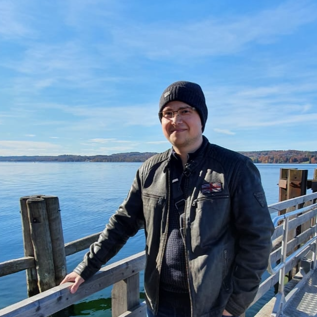

About Me
Hello, my name is Denis. I have a keen interest in tackling complex challenges and continuously expanding my knowledge in the ever-evolving field of software engineering.
Problem solving is a hobby of mine, because of how it's applied daily in solving everyday problems. I'm currently studying software engineering with the hopes of becoming a Full Stack Developer.
I'm eager to leverage my problem-solving skills and passion for learning to make significant contributions in the software engineering field.
Interests
-
I'm passionate about accruing knowledge and new skills through working on personal projects.Programming -
I enjoy reading about the latest developments in the IT sphere as well as sci-fi, horror, self-help books, and autobiographies. These genres help me improve my focus and imagination.Reading -
Studying is also a hobby of mine. As you know, the software engineering industry is a dynamic and fast-paced environment where one must adapt quickly to be confident in their programming skills.Studying


-
Gaming helps me relax and de-stress while also stimulating my creativity and visual memory. It also builds upon my critical thinking skills and improves my strategy and leadership abilities.Gaming -
I enjoy fitness and jogging because physical activity is important for numerous health benefits such as improving brain health, managing weight, and reducing stress.Fitness -
Clearing the mind of unnecessary clutter helps you prepare for the day ahead.Meditation